중첩 vSphere 환경에서 네트워크 경로 확보부터 클러스터·공유 스토리지·도메인 구성까지 직접 구축하고, 물리 서버를 초기화해 재구축한 뒤 HA·DRS 동작을 검증했습니다.
가상의 기업 JY그룹이 각각 3-Tier로 운영하던 계열사 두 곳(JY쇼핑, JY리테일)을 단일 2-Tier로 병합 및 통합 데이터센터로 관리하는 시나리오에서, 리테일 측 vSphere 인프라를 담당했습니다.
| 역할 | 조별 프로젝트 · 리테일 파트 단독 담당 (네트워크 · 가상화 · AD 전 구간) |
|---|---|
| 환경 | 물리 서버 위 ESXi → 중첩 ESXi 3대 → 서비스 VM |
| 사용 제품 | VMware ESXi 8.0.1, vCenter Server(VCSA) 8, TrueNAS, Windows Server AD, Apache2 |
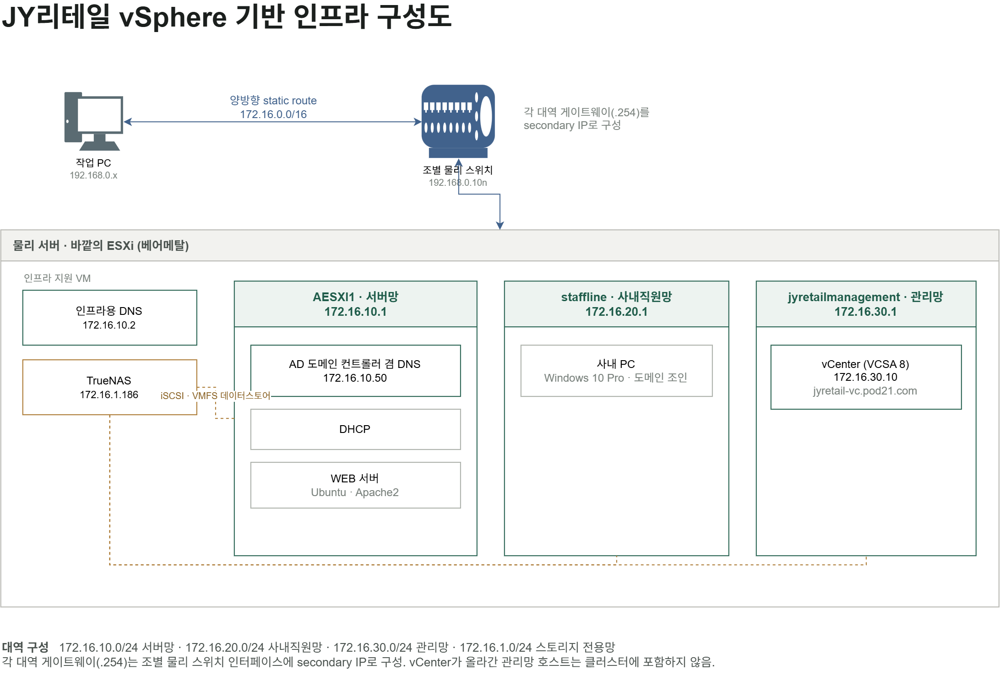
중첩 ESXi VM에는 "하드웨어 지원 가상화를 게스트 OS에 노출"(VT-x 노출) 옵션이 필요합니다. 이 옵션이 없으면 중첩 ESXi 위에 VM을 올릴 수 없습니다.
| 대역 | 용도 | 올라간 것 |
|---|---|---|
| 172.16.10.0/24 | 서버망 | AD 도메인 컨트롤러 겸 DNS / DHCP / WEB 서버 |
| 172.16.20.0/24 | 사내직원망 | 사내 PC — 도메인 조인 클라이언트 |
| 172.16.30.0/24 | 관리망 | vCenter |
| 172.16.1.0/24 | 스토리지 전용망 | TrueNAS iSCSI |
| 172.16.10.1 | 서버망 ESXi (AESXI1) |
| 172.16.10.2 | 인프라용 DNS — 바깥 ESXi 위 VM |
| 172.16.10.50 | AD 도메인 컨트롤러 겸 서비스 DNS — 중첩 ESXi 위 VM |
| 172.16.20.1 | 직원망 ESXi (staffline) |
| 172.16.30.1 | 관리망 ESXi (jyretailmanagement) |
| 172.16.30.10 | vCenter — jyretail-vc.pod21.com |
| 172.16.1.186 | TrueNAS iSCSI 인터페이스 |
| .254 | 각 대역 게이트웨이 — 물리 스위치 인터페이스 secondary IP |
.254로 지정역할과 계층에 따라 두 대로 분리했습니다. 정방향(A)·역방향(PTR)을 모두 등록했고, ESXi의 resolving 검증과 vCenter 설치는 정·역방향이 일치해야 통과합니다.
ESXi 호스트네임 필드에는 FQDN 전체를 입력해야 합니다. 짧은 이름만 넣으면 도메인이 붙지 않아 해석에 실패합니다. ping은 되는데 resolving만 실패하면 53번 포트 차단이나 레코드 누락을 먼저 확인했습니다. nslookup 응답이 아예 없으면 방화벽·서비스 문제, NXDOMAIN이면 레코드·zone 문제로 갈립니다.
vsphere.local을 AD 도메인과 분리해 신규 생성호스트 등록이 "로그인하지 못했습니다"로 실패하는 경우가 있었습니다. 인증서 검증이 시간 불일치로 깨지는 것이라, NTP를 vCenter 기준으로 맞춰 해결했습니다.
vmkping으로 확인 → iSCSI 소프트웨어 어댑터 → Network Port Binding → Dynamic Discovery중첩 환경에서 스토리지 포트그룹은 바깥 ESXi의 포트그룹이고, 중첩 ESXi 안에서는 하나의 vmnic으로 보입니다. 어느 vmnic인지는 MAC 주소 대조로 확인했습니다. 바깥 ESXi VM 설정의 어댑터 MAC과 중첩 ESXi의 Physical NIC MAC을 맞춰보는 방식입니다.
jyretail.com권한 분리는 양방향으로 확인했습니다. 회계 계정은 회계 폴더에 접근되고 인사 폴더는 막히는 것, 인사 계정은 그 반대인 것을 각각 확인했습니다. 되는 것과 막히는 것이 둘 다 의도대로여야 분리가 완성된 것으로 봤습니다.
| 목적 | 수단 |
|---|---|
| SMB 폴더 접근 권한 | 그룹 — NTFS 권한에 AD 그룹 추가 |
| 부서별 차등 동작 | OU + GPO |
| 조직 구조 표현 | OU |
서버망에 Ubuntu Live Server를 올리고 Apache2를 설치해 웹 서버를 기동했습니다. 애플리케이션 배포까지는 진행하지 않았고, 기본 페이지 응답을 확인하는 수준입니다.
① 작업 PC에서 실습 대역으로 가는 경로 확보
작업 PC는 192.168.0.x, 실습 장비는 172.16.x 대역이었습니다. 대역이 달라 PC에서 ESXi 호스트 클라이언트를 바로 띄울 수 없었습니다.
바깥 ESXi의 가상 라우터(CSR1000v) 경유라우터에서 172.16.10.1로 ping이 가지 않았습니다. 라우터의 172.16.10.254 인터페이스는 라우터 전용 격리 포트그룹에 물려 있었습니다. 같은 대역이지만 실제 서버망과는 다른 망이라, 이 방식을 폐기했습니다.
콘솔을 타고 들어가기바깥 ESXi 콘솔에서 중첩 ESXi 콘솔로 단계마다 진입하는 방법. 중첩 구조를 매번 거쳐야 해 상시 작업 경로로는 효율이 떨어져 배제했습니다.
라우팅 테이블 확인작업 PC에서 route print로 확인하니, 172.16.10.0 목적지의 게이트웨이가 라우터가 아니라 조별 물리 스위치였습니다. 해당 대역으로 가는 실제 경로는 물리 스위치가 쥐고 있었습니다.
network is unreachable이 발생합니다.② vCenter 설치 후 503 Service Not Available
VCSA 설치가 후반 단계(서비스 기동)에서 503으로 실패했습니다.
중첩 ESXi 메모리 사용률 96% 확인 → 메모리 부족을 의심하고 증설
증설 후에도 동일하게 실패
VCSA 셸에서 service-control --status --all → vpostgres 서비스가 crash 상태
df -h로 디스크 용량 확인 → 여유 있음, 디스크 문제 배제
앞선 설치가 자원 부족으로 중단되면서 DB 초기화가 손상된 상태로 특정
기존 VCSA를 삭제하고, 자원을 충분히 확보한 상태에서 재설치해 정상 기동을 확인했습니다.
service-control로 합니다.vCenter는 관리망 ESXi 위에 올리고, 이 호스트는 클러스터에 넣지 않았습니다. 클러스터에 포함시키면 해당 호스트를 유지보수 모드로 전환할 때 vCenter 자신도 함께 내려갑니다. 관리 도구가 관리 대상과 같은 운명을 공유하는 구조가 되어, 정작 필요한 순간에 접근할 수단이 사라집니다.
| 서버 | 위치 | 역할 |
|---|---|---|
| 172.16.10.2 | 바깥 ESXi 위 VM | 인프라용 — vCenter 설치와 ESXi 호스트네임 해석 |
| 172.16.10.50 | 중첩 ESXi 위 VM | 서비스용 — 서비스 VM의 도메인 컨트롤러 겸 DNS |
vCenter 설치는 그 시점에 이미 동작하는 DNS를 요구합니다. 중첩 구조에서 서비스용 DC는 중첩 계층 안의 VM이므로, 인프라를 세우는 단계에서 참조할 DNS는 바깥 계층에 따로 두는 편이 안전하다고 판단해 두 대로 나눴습니다.
도메인 조인 클라이언트의 DNS는 반드시 DC로 지정해야 합니다. 인프라용 DNS를 보게 두면 도메인을 찾지 못합니다.
TrueNAS는 바깥 ESXi 위의 VM입니다. 따라서 바깥 ESXi가 정지하면 중첩 ESXi와 공유 스토리지가 동시에 사라집니다. 실제 환경이라면 스토리지가 별도 어플라이언스라 하이퍼바이저 장애와 스토리지 장애가 분리되는데, 이 구성은 그렇지 않습니다.
그럼에도 HA와 vMotion은 정상 동작합니다. 공유 스토리지가 물리적으로 분리된 장비일 필요는 없고, 클러스터 내 모든 호스트가 같은 데이터스토어를 본다는 조건만 만족하면 되기 때문입니다. 실습 환경의 제약 안에서 그 조건을 충족시킨 구성입니다.
물리 장비를 공장 초기화 상태에서 다시 세우고, 별도 구간의 vSphere 클러스터에서 HA와 DRS의 동작을 검증했습니다.
| 2-1 물리 서버 | 2-2 · 2-3 HA / DRS | |
|---|---|---|
| 대상 | Dell PowerEdge R630 실장비 | vSphere 클러스터 |
| 구간 | 5번 스위치 | 4번 스위치 · vCenter 192.168.1.104 |
| 소프트웨어 | ESXi 8.0.1 | ESXi 8.0.1, vCenter Server 8 |
| 공유 스토리지 | — | TrueNAS NFS |
기존 ESXi 위에 OS만 다시 올리는 방식이 아니라, 하드웨어 설정까지 공장 초기화한 상태에서 처음부터 다시 구축하는 방식을 택했습니다. BIOS · iDRAC · RAID 구성이 어떤 순서로 물려 있는지 직접 확인하기 위한 선택이었습니다.
| 단계 | 내용 |
|---|---|
| 1 | iDRAC 웹 UI 접속 (기본 계정 root / calvin) |
| 2 | Lifecycle Controller → Hardware Configuration → Repurpose or Retire System |
| 3 | BIOS · Lifecycle Controller 로그 · iDRAC · 하드웨어 캐시 전체 초기화 |
| 4 | 초기화로 원격 접근이 끊기므로 물리 콘솔 연결 후 iDRAC IPv4 재설정 |
| 5 | PERC H730 Mini → Clear configuration → RAID 5 구성 (물리 디스크 3본) |
| 6 | Create Virtual Disk 실행 후 Virtual Disk Management에서 구성 확인 |
| 7 | Virtual Media로 ESXi 8.0.1 ISO 마운트 → Next Boot 지정 → 설치 |
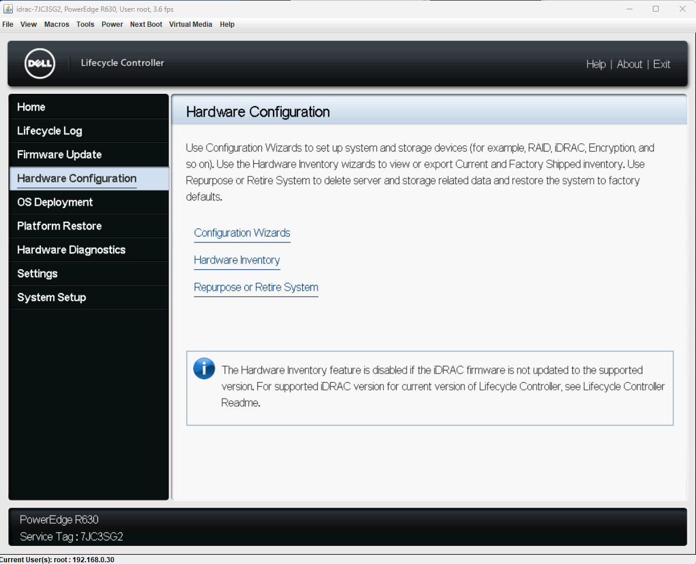
iDRAC을 초기화하면 웹 UI 접근이 끊깁니다. 이 시점부터는 물리 콘솔로 붙어 iDRAC IP를 다시 잡아야 원격 작업을 재개할 수 있습니다. 초기화 순서를 잘못 잡으면 원격으로 되돌릴 방법이 없다는 점을 이 단계에서 확인했습니다.
RAID 5 구성 시 설정을 적용(Apply Changes)한 것만으로는 볼륨이 만들어지지 않습니다. Create Virtual Disk까지 실행해야 실제 가상 디스크가 생성됩니다.
iDRAC 8의 Virtual Console 뷰어 파일이 다운로드 직후 사라지고 실행되지 않았습니다. iDRAC Settings → Virtual Console → Plug-in Type을 Native에서 HTML5로 변경해 웹 콘솔로 작업을 진행했습니다.
디스크 3본을 RAID 5로 묶었습니다. 첫 실습에서는 디스크 한 개를 단독으로 쓰고 나머지 두 개를 RAID 0으로 묶은 구성이었는데, 패리티가 없어 디스크 한 장이 빠지면 데이터가 사라집니다. 이번에는 이중화가 되는 쪽을 택했습니다.
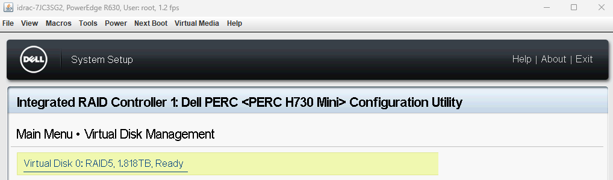
RAID 배열의 용량은 가장 작은 디스크를 기준으로 정렬됩니다. 장착된 디스크는 931GB 1본과 1.86TB 2본으로 용량이 달랐습니다.
| 원시 용량 합 | 약 4.55TB — 931GB + 1.86TB + 1.86TB |
|---|---|
| RAID 5 산출 | (디스크 수 − 1) × 최소 디스크 = 931GB × 2 = 약 1.82TB |
| 실제 사용 가능 | 1.818TB — 구성 화면의 값과 일치 |
| 활용률 | 약 40% |
큰 디스크 두 본에서 각각 931GB만 쓰이고 나머지는 배열에 편입되지 못했습니다. 처음 실습에서 용량이 다른 디스크를 한데 묶지 않고 나눠서 구성했던 이유가 여기 있었습니다.
③ ESXi 설치 후 부팅 디스크 미인식
PXE-E53: No boot filename received → No boot device available 발생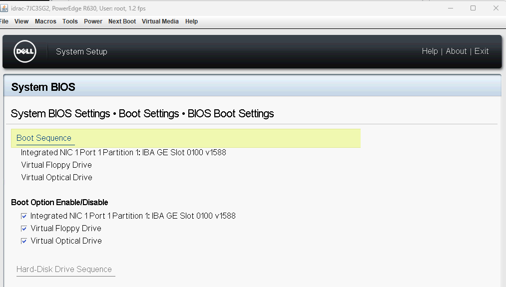
| 확인 대상 | 결과 | 판단 |
|---|---|---|
| RAID 디스크 상태 | Virtual Disk 0 : RAID 5, Ready / Controller Optimal | 디스크 문제 아님 |
| ISO 마운트 상태 | 언마운트됨 | ISO 잔류 문제 아님 |
| PERC 부팅 지정 | Select Boot Device가 Virtual Disk 0으로 지정됨 | 컨트롤러 설정 문제 아님 |
| ESXi 재설치 | 동일 증상 반복 | 설치 누락 문제 아님 |
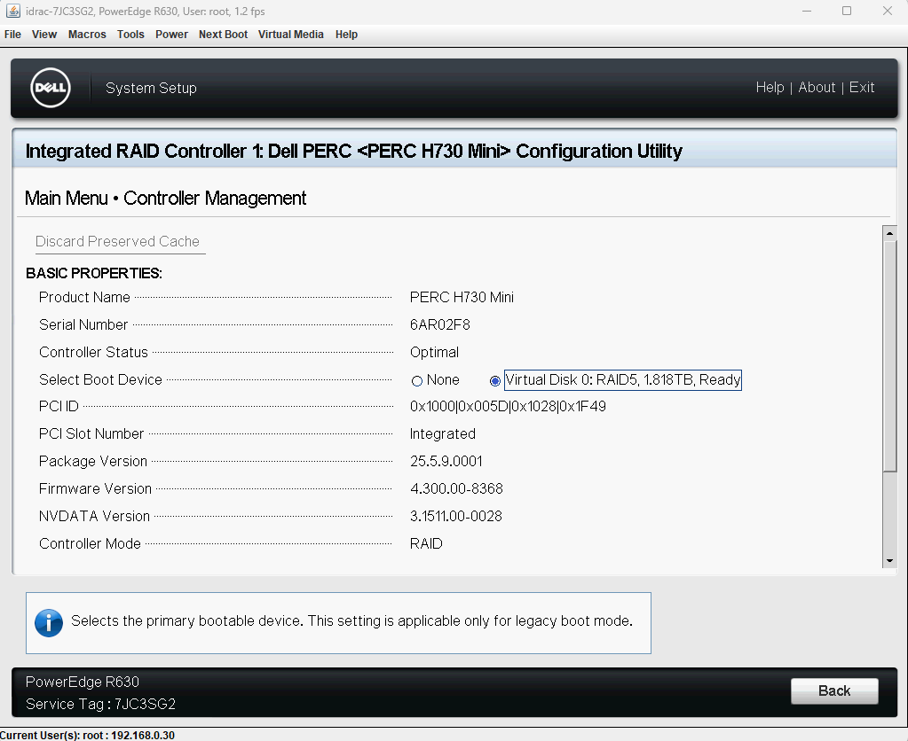
디스크 · 컨트롤러 · 설치가 모두 정상인데 BIOS 부팅 목록에만 디스크가 올라오지 않는 상황이었습니다.
Boot Mode를 Legacy(BIOS)에서 UEFI로 변경한 뒤 재부팅하자 정상적으로 DCUI에 진입했고, 웹 호스트 클라이언트 접속까지 확인했습니다.
부팅 모드와 파티션 방식은 짝을 이룹니다. Legacy는 MBR, UEFI는 GPT를 씁니다.
이번 사례에서 설치 모드와 부팅 모드는 둘 다 Legacy로 일치한 상태였습니다. 그런데도 부팅이 되지 않았습니다.
모드가 일치하는 것과 부팅 항목이 등록되는 것은 별개의 단계입니다. 모드 일치는 부팅이 가능하기 위한 최소 조건일 뿐, 그 다음 단계인 부팅 항목 등록에서 막힐 수 있습니다. PERC 컨트롤러를 거친 가상 디스크에서 BIOS가 MBR 부트 정보를 부팅 가능한 디스크로 등록하지 못하는 경우가 있고, 이번이 그 경우였습니다.
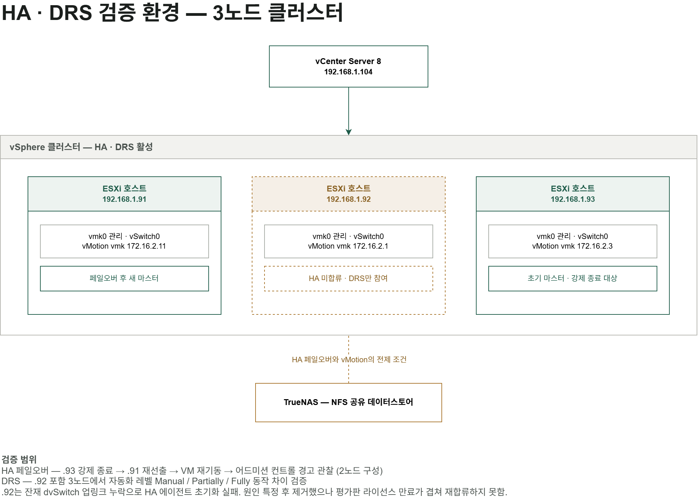
④ HA 에이전트 초기화 실패
3노드 클러스터에 vSphere HA를 활성화하자 호스트 한 대만 "초기화되지 않음" 상태로 오류가 떴습니다. 이벤트 문구는 "vSphere HA 통신에 사용할 수 있도록 설정된 포트 그룹이 이 호스트에 없습니다"였습니다. 문구만 보면 관리 네트워크 문제를 가리켰습니다.
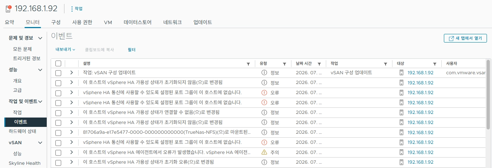
| 확인 대상 | 결과 |
|---|---|
| 관리 포트그룹 존재 · 이름 | 정상 호스트와 동일 (vSwitch0 / Management Network) |
| vmk0 관리 서비스 플래그 | 활성 |
| vSwitch0 물리 업링크 | vmnic0 연결됨 |
| vmk0 IPv4 설정 | 정상 호스트와 동일 대역 · 게이트웨이 |
| vmkping → 다른 호스트 | 정상 |
| vmkping → vCenter | 정상 |
| vmware-fdm status | running |
| HA 재구성 · 유지보수 모드 재투입 | 상태 변화 없음 |
관리 네트워크는 어느 항목에서도 문제가 나오지 않았습니다. 오류 문구가 가리키는 방향과 실제 상태가 어긋나 있었습니다.
tail -f /var/log/fdm.log로 에이전트 로그를 직접 열었습니다.
DvsPortset-0 -> ... (ports = 1798; pnics = []) DvsPortset-1 -> ... (ports = 1798; pnics = [vmnic4 vmnic3])
DvsPortset-0의 pnics가 비어 있었습니다. 이 호스트에 분산 스위치가 두 개 물려 있는데, 그중 하나에 업링크로 쓸 물리 NIC가 하나도 할당되지 않은 상태였습니다.
esxcli network vswitch dvs vmware list로 정상 호스트와 비교했습니다.
| 호스트 | 잔재 dvSwitch 업링크 | 실습용 dvSwitch 업링크 |
|---|---|---|
| 192.168.1.91 (정상) | vmnic1 | vmnic3, vmnic4 |
| 192.168.1.92 (문제) | 없음 | vmnic3, vmnic4 |
문제 호스트에만 해당 분산 스위치의 업링크가 비어 있었습니다. 이전 실습에서 남은 잔재 스위치였습니다.
관리용 vmk0는 표준 스위치 vSwitch0에 있었기 때문에 관리 통신과 ping은 전부 정상이었습니다. 그러나 HA 에이전트는 관리 vmk 하나만 보는 것이 아니라, 호스트에 물린 분산 스위치들까지 하트비트 통신 후보로 검사합니다. 업링크가 비어 있는 dvPortGroup을 후보로 잡으면서 "통신에 쓸 수 있는 포트 그룹이 없다"는 판정을 내린 것이었습니다.
사용하지 않는 잔재 분산 스위치에서 해당 호스트를 제거 → 상태가 "초기화되지 않음"에서 "구성 오류"로 변경. 통신 후보를 찾지 못하던 단계는 벗어났습니다.
에이전트 재배포를 위해 vmware-fdm restart, HA 재구성, 클러스터 연결 해제 · 재연결을 시도하던 중 vCenter의 평가판 라이선스가 만료되어 작업 자체가 막혔습니다.
라이선스 종류를 확인해 재할당했습니다. vCenter에는 vCenter Server Standard 키가, ESXi 호스트에는 vSphere Enterprise Plus 키가 필요하며 서로 교차 할당되지 않습니다.
그럼에도 해당 호스트는 클러스터에 재합류하지 못했습니다. 페일오버 검증은 남은 2노드로 진행했습니다.
pnics = []가 이상한지 판단할 수 없었고, 정상 호스트의 esxcli 결과와 대조해서야 확정할 수 있었습니다.테스트 VM이 공유 데이터스토어 위에 있고 남은 호스트에도 마운트되어 있는지 확인한 뒤, 현재 마스터 호스트를 확인하고 상위 계층에서 강제 전원 차단했습니다. 게스트 OS 종료가 아니라 전원 차단이어야 HA가 장애로 인식합니다.
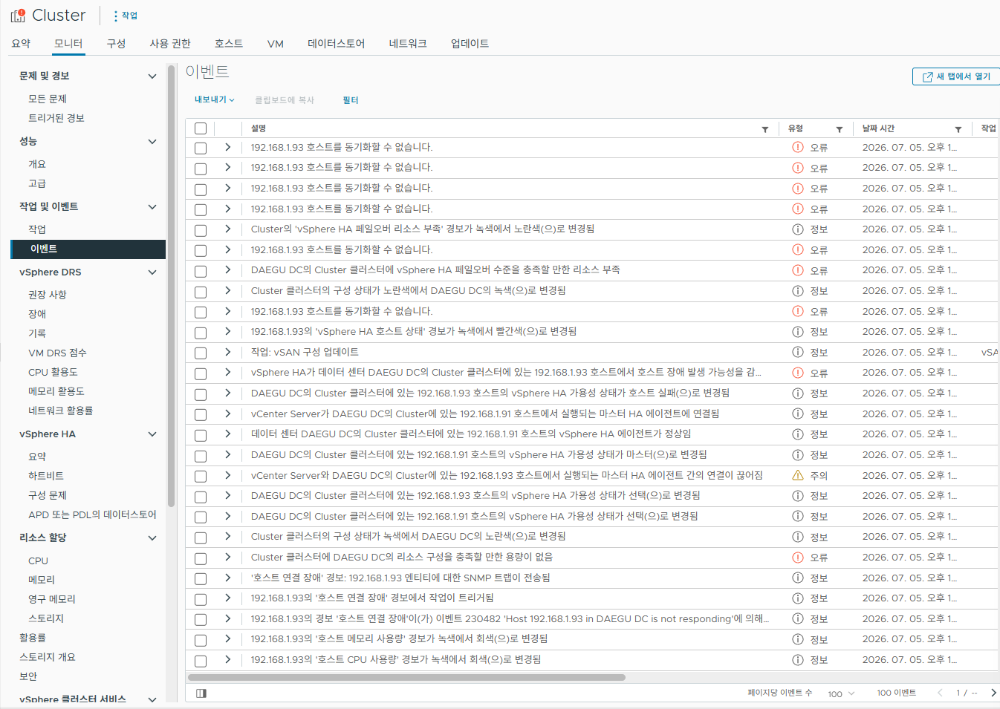
| 순서 | 이벤트 | 의미 |
|---|---|---|
| 1 | 호스트 연결 장애 / is not responding | 다운 감지 |
| 2 | vSphere HA가 호스트 장애 발생으로 판정 | 페일오버 발동 |
| 3 | 남은 호스트의 HA 가용성 상태가 마스터로 변경 | 슬레이브가 새 마스터로 재선출 |
| 4 | 다운된 호스트의 VM이 남은 호스트에서 재기동 | 페일오버 완료 |
| 5 | 페일오버 리소스 부족 경보 녹색 → 노란색 | 어드미션 컨트롤 경고 |
5번 경고는 장애가 아닙니다. VM 재기동은 성공했고, HA가 "지금 구성으로는 다음 장애를 감당할 여유가 없다"고 알리는 상태입니다. 2노드 구성에서 한 대가 빠지면 남은 자원이 페일오버 보장 수준에 미치지 못하기 때문에 나타납니다.
종료했던 호스트를 다시 켜면 클러스터에 재합류합니다. 다만 VM은 자동으로 원래 호스트로 돌아가지 않고 옮겨간 호스트에서 계속 동작합니다.
DRS 검증에 앞서 vMotion 통신이 성립하지 않는 상태를 먼저 정리해야 했습니다.
| 호스트 | vMotion 포트그룹 IP | 실제 켜진 서비스 |
|---|---|---|
| 192.168.1.91 | 172.16.4.1 | vSAN, FT 로깅 |
| 192.168.1.92 | 172.16.2.1 | vMotion |
| 192.168.1.93 | 172.16.2.3 | vMotion, vSAN, 관리 |
문제는 두 가지였습니다. 대역 불일치 — vMotion 트래픽은 라우팅 없이 같은 서브넷 안에서 통신하므로, 한 호스트만 다른 대역에 있어 마이그레이션이 성립하지 않는 상태였습니다. 이름과 실제 설정의 불일치 — 포트그룹 이름은 세 대 모두 vMotion인데 실제 활성화된 서비스는 제각각이었습니다. 이전 실습(FT, vSAN)에서 만진 설정이 정리되지 않고 남아 이름과 내용이 어긋나 있었습니다.
이미 두 대가 172.16.2.x 대역이었으므로 수정 범위가 가장 작은 쪽으로 기준을 잡고 나머지 한 대의 vMotion vmkernel IP를 변경했습니다. 세 대 모두 vMotion 서비스 플래그를 확인한 뒤 vmkping으로 호스트 간 통신을 확인하고 진행했습니다. FT · vSAN 설정은 이번 검증에 필요하지 않아 건드리지 않고, vMotion만 성립하도록 최소한으로 맞췄습니다.
한 호스트에 Ubuntu Live Server를 올리고 stress-ng --cpu 4 --timeout 300s로 가상 CPU 4개를 5분 동안 점유시켜 해당 호스트에만 부하가 쏠리게 만들었습니다.
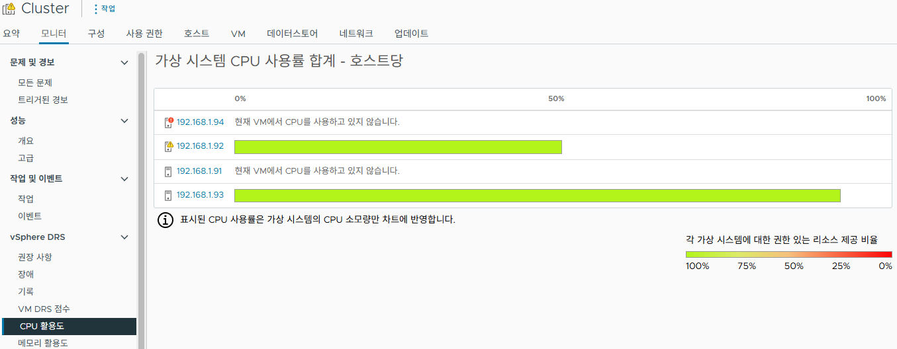
부하는 확실히 걸렸습니다. 대상 호스트의 CPU 사용률이 100% 가까이 올라갔고 다른 호스트는 거의 유휴 상태였습니다. 그런데도 마이그레이션 추천이 나오지 않았습니다.
원인은 부하가 부족해서가 아니었습니다. 부하를 내는 VM이 한 대뿐이었기 때문입니다. 그 VM을 옮기면 부하를 받던 호스트가 비고 옮겨간 호스트가 100%가 되어, 불균형이 해소되는 게 아니라 방향만 뒤집힙니다. DRS는 부하가 높다는 사실이 아니라 옮겼을 때 전체가 개선되는지를 계산하기 때문에 추천을 내지 않은 것이었습니다.
리눅스 서버를 한 대 더 올려 부하 VM을 늘리자 추천이 발생했습니다.
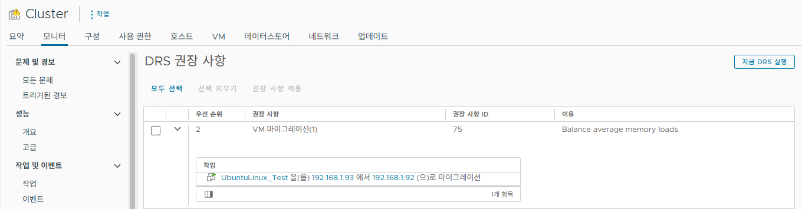
부하는 CPU로 걸었는데 추천 이유는 메모리 부하 분산으로 나왔습니다. 중첩 환경에서 메모리가 먼저 빠듯해지는 영향으로 보이며, DRS가 CPU와 메모리를 함께 보고 판단한다는 점을 확인할 수 있었습니다.
| 레벨 | 초기 배치 | 실행 중 마이그레이션 | 검증 방법 |
|---|---|---|---|
| Manual | 추천 | 추천 | 권장 사항에 뜬 항목을 직접 적용해 마이그레이션 확인 |
| Partially Automated | 자동 | 추천 | VM 생성 시 개별 호스트가 아닌 클러스터를 대상으로 지정 → 부하가 적은 호스트에 자동 배치 |
| Fully Automated | 자동 | 자동 | 부하를 걸자 추천이 쌓이지 않고 즉시 실행됨 |
Partially Automated는 마이그레이션 추천 화면만 보면 Manual과 구분되지 않습니다. 차이는 신규 배치에서 드러납니다. VM 생성 마법사에서 컴퓨팅 리소스로 클러스터를 선택하면 DRS가 배치를 결정하고, 개별 호스트를 직접 고르면 자동 배치가 아니라 수동이 됩니다.
Fully Automated는 권장 사항 화면에 아무것도 남지 않습니다. 추천이 뜨자마자 자동 적용되어 사라지기 때문입니다. 실제 동작은 작업 로그에서 확인했습니다.
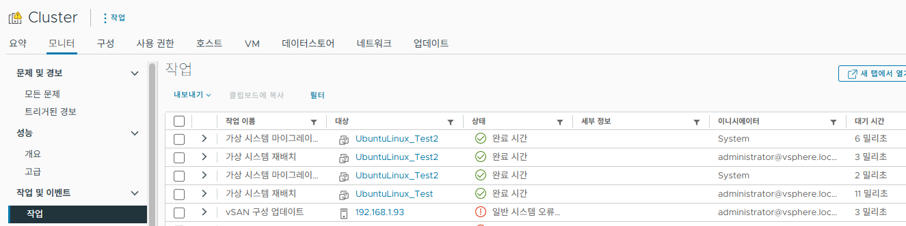
esxcli, vmkping, service-controlfdm.log, vCenter 이벤트 · 작업 로그route print, nslookup, stress-ng| VMware Certified Professional — VVF Administrator | 2026.05 |
| Cisco Certified Network Associate (CCNA) | 2026.04 |